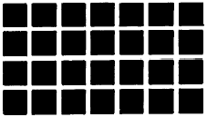

실내건축산업기사 (2003-03-16 기출문제)
1과목: 실내디자인론
1. 판매공간의 실내 디자인을 위하여 고려할 사항과 관계가 적은 것은?
- 실내의 바닥은 미끄럽지 않고 너무 딱딱하지 않은 재료를 사용한다.
- 고객의 동선과 종업원의 동선을 구별하여 원활하게 계획한다.
- 매장의 상품보다 실내디자이너의 의도가 돋보이게 계획한다.
- 판매공간 내의 조명은 일반적으로 그림자가 없는 부드러운 빛을 사용한다.
(정답률: 98%)

2. 균형(balance)에 대한 설명 중 옳지 않은 것은?
- 대칭의 균형은 일반적으로 방계대칭과 방사대칭으로 나눈다.
- 방사대칭으로는 대칭형, 확대형, 회전형이 있다.
- 방계대칭은 상하 또는 좌우와 같이 한방향에 대한 대칭이다.
- 균제와 균형은 안정감을 주나 정연감이 지나쳐 자유롭고 경쾌하다.
(정답률: 76%)
3. 공간의 레이아웃(lay-out)과정에서 고려하지 않아도 좋은 것은?
- 공간별 그루핑
- 동선
- 가구의 크기와 점유면적
- 재료의 마감과 색채계획
(정답률: 73%)
4. 샘플보드(sample board)에서 알 수 있는 것과 관계가 적은 것은?
- 마감재의 색
- 실내의 분위기
- 공간의 입체적 효과
- 질감의 조화
(정답률: 70%)
5. 초등학교 교실의 실내계획에 대한 설명 중 옳지 않은 것은?
- 교실문이 여닫이일 때는 밖여닫이로 하는 것이 좋다.
- 교실 색채계획은 중간색을 쓰는 것이 좋다.
- 천정 색채는 어둡게 하여 차분한 분위기를 유도한다.
- 바닥재는 내마모성이 있고 소음이 나지 않는 재료로 한다.
(정답률: 92%)
6. 실내디자인의 정의에 해당되지 않는 사항은?
- 실내디자인은 건축의 내부공간을 생활목적에 맞게 계획하는 것이다.
- 실내공간은 안전하고 편리하며 쾌적해야 한다.
- 실내공간은 추상적이며 개념적일 때 더욱 개성적이 된다.
- 실내디자인은 실내공간을 구성하는 전반적인 내용을 포함한다.
(정답률: 86%)
7. 인테리어 디자인의 측면에서 공간을 효율적으로 사용할 수 있는 가장 좋은 가구는?
- 업홀스터리가구
- 붙박이가구
- 조립식가구
- 원목가구
(정답률: 80%)
8. 전혀 성질이나 질량이 다른 둘 이상의 것이 동일 공간에 배열되어 서로의 특질을 더욱 돋보이게 하는 디자인의 원리는?
- 강조
- 비례
- 균형
- 대비
(정답률: 88%)
9. 실내공간의 높낮이 스케일감을 결정하는 구성요소와 가장 거리가 먼 것은?
- 바닥
- 벽면
- 천정
- 가구
(정답률: 38%)
10. 실내공간에서의 인간생활을 기능적으로 분류할 때 거리가 가장 먼 것은?
- 작업기능
- 휴식기능
- 운동기능
- 취식기능
(정답률: 60%)
11. 실내공간을 심리적으로 구획하는데 사용하는 일반적인 방법에 속하지 않는 것은?
- 식물
- 기둥
- 가구
- 커튼
(정답률: 49%)
12. 전시공간의 설계시 고려해야 할 기본사항이 아닌 것은?
- 전시물의 특성
- 관람객의 움직임
- 관람방식
- 관람료 및 출구
(정답률: 81%)
13. 실내디자인의 아이디어 개발방법으로 적당하지 않은 것은?
- 디자이너 자신의 경험을 최우선으로 한다.
- 과거의 성공적인 사례를 조사, 분석한다.
- 참고문헌의 자료를 수집한다.
- 고객과의 인터뷰 자료를 분석한다.
(정답률: 100%)
14. 조명기구를 선택할 때 고려해야 될 조명의 4요소는?
- 명도.대비.눈부심.광도
- 명도.대비.크기.움직임
- 명도.대비.조도.광도
- 명도.광도.조도.연색성
(정답률: 42%)
15. 실내마감재료의 질감은 시각적으로 변화를 주는 중요한 요소이다. 다음 중 재료의 질감을 바르게 활용하지 못한 것은?
- 창이 작은 실내는 거친질감을 사용하여 안정감을 준다.
- 좁은 실내는 곱고 매끄러운 재료를 사용한다.
- 차고 딱딱한 대리석 위에 부드러운 카페트를 사용하여 질감대비를 주는 것이 좋다.
- 넓은 실내는 거친 재료를 사용하여 무겁고 안정감을 갖도록 한다.
(정답률: 75%)
16. 디자인의 원리 중 균형의 요인이 아닌 것은?
- 불규칙한 형태는 기하학적 형태보다 가볍게 느껴진다
- 작은 것은 큰 것보다 가볍게 느껴진다.
- 수직, 수평선 보다 사선이 가볍게 느껴진다.
- 부드럽고 단순한 것은 거칠고 복잡한 것보다 가볍게 느껴진다.
(정답률: 58%)
17. 길이와 위치만 있고, 폭과 부피가 없는 것은?
- 선
- 점
- 면
- 입체
(정답률: 87%)
18. 실내공간을 구성하는 요소와 그 의미에 관한 설명 중 가장 관계가 적은 것은?
- 바닥: 상승된 바닥은 다른 부분보다 중요한 공간이라는 것을 나타낸다.
- 벽: 벽의 높이가 가슴 정도이면 주변공간에 시각적 연속성을 주면서도 특정 공간을 감싸주는 느낌을 준다.
- 천정: 천정의 높이는 실내공간의 사용목적과 깊은 관계가 있다.
- 문: 일반적으로 문은 실내의 중심보다 벽쪽으로 시선이 향하도록 열리게 해야 한다.
(정답률: 63%)
19. 다음 중 입면도에 속하지 않는 것은?
- 정면도
- 측면도
- 배면도
- 단면도
(정답률: 60%)
20. 부엌의 종류 중 별장주택에서 흔히 볼수 있는 유형으로 취사용 작업대가 하나의 섬처럼 실내에 설치되는 부엌은?
- 오픈키친
- 아일랜드키친
- 독립형부엌
- 키친네트
(정답률: 80%)
2과목: 색채 및 인간공학
21. 다음 중 식당의 실내배색에 있어서 식욕을 돋구는 색으로 가장 좋은 색은?
- RP 바탕에 Y
- YR 바탕에 R
- G 바탕에 B
- P 바탕에 Y
(정답률: 76%)
22. 표면색을 백색광으로 비쳤을 때 각 파장별로 빛이 반사되는 정도를 나타내는 용어는?
- 분광분포
- 분광특성
- 분광반사율
- 분광분포곡선
(정답률: 71%)
23. 단위 시간에 어떤 방향으로 농출하고 있는 빛의 양(量)은?
- 조도(照度)
- 광속(光束)
- 광도(光度)
- 명도(明度)
(정답률: 52%)
24. 유채색의 명도 및 채도에 관한 수식어 중 가장 채도가 높은 것은?
- Vivid
- Light
- Deep
- Pale
(정답률: 75%)
25. 색채계획에 있어 효과적인 색지정을 행하기 위하여 디자이너가 갖추어야 할 능력 중 비교적 관계가 가장 적은 것은?
- 색채변별능력
- 색채조색능력
- 색채구성능력
- 심리조사능력
(정답률: 77%)
26. 다음 중 가장 주목성이 높은 배색은?
- 자극적이고 대조적인 느낌의 배색
- 온화하고 부드러운 배색
- 빨강, 주황계통의 배색
- 중성색, 고명도의 배색
(정답률: 72%)
27. 다음 중 최소 집단치를 위한 설계에서 관련 인체계측 변수 분포의 1, 5, 10% 등과 같은 하위 백분위(percentile)를 기준으로 하는 경우는?
- 문 높이
- 선반 높이
- 탈출구
- 통로
(정답률: 77%)
28. 인간과 기계의 능력을 비교했을 때 기계가 인간보다 우수한 기능은?
- 융통성
- 창조능력
- 연속가동성
- 적응능력
(정답률: 65%)
29. 색의 속성 가운데 온도감의 효과를 내는데 주로 작용하는 것은?
- 색상
- 명도
- 채도
- 휘도
(정답률: 62%)
30. 다음 중 소음의 측정 단위는?
- lux
- dB
- fc
- mμ
(정답률: 84%)
31. 다음 색의 3속성을 설명한 것 중 옳은 것은?
- 색의 강약, 즉 포화도를 명도라고 한다.
- 감각에 따라 식별되는 색의 종류를 채도라 한다.
- 두 색 중에서 빛의 반사율이 높은 쪽이 밝은 색이다.
- 그레이 스케일(gray scale)은 채도의 기준 척도로 사용된다.
(정답률: 64%)
32. 인체 측정치 중 앉은 눈높이의 올바른 설명은?
- 앉은 의자면에서 눈섭까지의 수직거리
- 앉은 의자의 다리 끝에서 눈섭까지의 수직거리
- 앉은 의자면에서 눈까지의 수직거리
- 앉은 의자의 다리 끝에서 눈까지의 수직거리
(정답률: 58%)
33. 다이얼 눈금의 설계 요령으로 잘못된 것은?
- 특별한 계산이 필요없이 다이얼이나 스케일을 읽을 수 있도록 설계한다.
- 바탕과 문자 사이의 대비를 크게 한다.
- 다이얼이나 스케일은 필요한 것보다 더 정밀하게 표시한다.
- 숫자나 문자는 되도록 고딕형태를 선택한다.
(정답률: 52%)
34. 피부감각에서 간지럽다는 감각을 느꼈을 때에 대한 설명중 관계 없는 것은?
- 주요한 피부감각들의 변화나 결합에서 생겨난다.
- 여러가지 신경섬유가 자극될 때 생긴다.
- 물체가 피부위를 이동 할 때 생기는 진동을 압력 감수기가 느끼는 것이다.
- 독자적으로 느끼는 피부감각이 있다.
(정답률: 61%)
35. 무채색의 설명 중 올바른 것은?
- 밝고 어두움만을 나타내며 색상과 채도가 없다.
- 무채색의 명도는 1∼14단계로 되어 있다.
- 밝은 쪽을 저명도 어두운 쪽을 고명도라 한다.
- 검정색과 같이 흰색도 따뜻한 색에 속한다.
(정답률: 62%)
36. 작업장의 조명 설계에 관한 설명 중 틀린 것은?
- 광원 및 물건에서도 눈부심이 없도록 할 것
- 작업부분과 배경사이에 콘트라스트가 없게 할 것
- 작업중 손 가까이를 일정하게 비추게 할 것
- 작업중 손 가까이를 적당한 밝기로 비출 것
(정답률: 57%)
37. 다음 그림과 같이 검정 4각형 사이의 교차하는 흰 부분에 약간 희미한 검은 점이 보이는 착각이 일어나는 현상과 가장 관계 있는 것은?

- 계시대비
- 부의잔상
- 연변대비
- 면적대비
(정답률: 20%)
38. 다음 순색을 기준으로 한 배색의 면적비 중 가장 균형이 잘못된 것은?
- 노랑 7 : 파랑 9
- 노랑 3 : 보라 9
- 빨강 5 : 녹색 4
- 빨강 1 : 파랑 1
(정답률: 22%)
39. 귀의 구조 중 고막이 있는 위치는?
- 외이와 중이 사이
- 중이와 내이 사이
- 정원창과 청신경 사이
- 난원창과 정원창 사이
(정답률: 32%)
40. 다음 짐을 나르는 방법 중 에너지가 가장 크게 소요되는 운반 방법은?
- 머리위에 얹기
- 쌀자루메기
- 양손나누어 들기
- 배낭메기
(정답률: 71%)
3과목: 건축재료
41. 다음중 안료가 포함되지 않은 것은?
- 유성바니쉬
- 수성페인트
- 유성페인트
- 래커에나멜
(정답률: 36%)
42. 굳지 않은 콘크리트의 성질을 표시하는 용어에 해당되지않는 것은?
- 반죽질기
- 성형성
- 피니셔빌리티
- 압축강도
(정답률: 44%)
43. 재료의 단열성능에 영향을 미치는 인자에 대한 설명중 틀린 것은 어느 것인가?
- 재료의 열전도율 재료의 두께에 비례한다.
- 열전도율은 함수율이 증가할수록 커진다.
- 동일재료라도 표면이 거칠수록 열전달이 적고 단열성은 높아진다.
- 재료밀도가 크면 겉보기 비중이 크고 열전도율이 커진다.
(정답률: 24%)
44. 콘크리트의 워커빌리티에 영향을 줄 수 있는 요소에 대한 설명중 옳지 않은 것은?
- 단위수량이 증가하면 워커빌리티는 좋아지지만 재료의 분리가 생기기 쉽다.
- 일반적으로 부(富)배합의 경우는 빈(貧)배합의 경우보다 워커빌리티가 좋다.
- 골재로 강자갈을 사용한 경우가 깬자갈이나 깬모래를 사용한 경우보다 워커빌리티가 나쁘다.
- 비빔시간이 과도하게 길면 콘크리트의 워커빌리티는 나빠진다.
(정답률: 45%)
45. 외장용으로 부적합한 석재는?
- 화강암
- 안산암
- 대리석
- 점판암
(정답률: 55%)
46. 목재의 용도 중 실내 치장용으로 사용하기에 좋지 않은 것은?
- 느티나무
- 단풍나무
- 오동나무
- 소나무
(정답률: 68%)
47. 다음은 타일공법에 대한 설명이다. 틀린 것은?
- 공법선정시 바닥조건, 외력조건 및 일조 등이 고려되어야 한다.
- 백화현상을 방지하기 위해서는 떠붙임 공법이 사용된다.
- 유니트타일 압착공법에서 타일 붙임은 누름판을 사용하여 모르타르가 삐져내밀정도로 세게 눌러 붙이도록 한다.
- 접착공법은 짧은 시간에 충분한 접착강도를 내는 특성은 있으나, 바탕의 습기에 따른 접착불량의 우려가 있다.
(정답률: 35%)
48. 테라조에 사용하는 안료의 종류와 색채의 관계가 맞는 것은?
- 크롬 - 빨강
- 산화망간 - 노랑
- 코발트 - 파랑
- 산화철 - 검정
(정답률: 46%)
49. 천장 및 내벽마감재료로 사용되는 보드(board)의 표면가공 종류 중 멜라민수지, 폴리에스텔수지, 페놀수지 등의 합성수지도료를 열처리 또는 광조사에 의해 경화시킨 것을 무엇이라고 하는가?
- 도장
- 프린트
- 오버레이
- 치장판붙임
(정답률: 49%)
50. 목재의 가공 처리방법에 대한 설명으로 옳지 않은 것은?
- 크레오소트 유, 콜타르, 아스팔트등의 유성 방부제는 많이 사용되지만 자극적 냄새가 나는 것이 결점이다.
- 목재의 인공건조방법으로 열기법, 자비법, 증기법, 훈연법, 전기법, 건조제법 등이 있다.
- 목재의 변색 및 부패를 막기 위해서는 자연건조시키는 것이 가장 이상적이다.
- 생옹이를 제외한 죽은 옹이, 빠진 옹이, 썩은 옹이 등은 목재의 강도에 영향을 주기 때문에 보의 하부에 있지 않도록 해야 한다.
(정답률: 37%)
51. 목재에 대한 설명중 옳은 것은?
- 목재 1재(才)는 1치 × 1치 × 12자이다.
- 심재(心材)는 수심 가까이 있기 때문에 함수율이 변재보다 높다.
- 건조가 잘된 목재일수록 내구성은 떨어진다.
- 심재가 변재보다 변형이 적다.
(정답률: 45%)
52. 비철금속 재료 중 알루미늄에 대한 기술로 적당치 않은 것은?
- 전기와 열의 양도체이다.
- 알칼리에 침식된다.
- 융점은 640 ∼ 660℃ 정도이다.
- 열에 의한 팽창계수는 콘크리트와 유사하다.
(정답률: 64%)
53. 물리· 화학적 모든 성질이 탁월하여 만능수지라 불리며 250℃의 고온에서도 연속사용이 가능하고 -100℃에서도 그 성질의 변화가 없는 수지는?
- 에폭시수지
- 불소수지
- 폴리우레탄수지
- 요소수지
(정답률: 30%)
54. 미장재료 중 수경성이 아닌 것은?
- 경석고 플라스터
- 시멘트 모르타르
- 혼합석고 플라스터
- 돌로마이트 플라스터
(정답률: 54%)
55. 주철의 최대 장점인 주조성을 가지며 또한 결점인 취성을 제거하여 강과 같이 단조할 수 있는 제품으로 듀벨, 창호 철물, 파이프 등에 사용되는 것은?
- 고급주철
- 강성주철
- 가단주철
- 백주철
(정답률: 21%)
56. 플라이애쉬를 혼입한 콘크리트의 특성에 관한 설명중 올바른 것은?
- 동일한 워커빌리티를 가진 보통콘크리트보다 많은 단위수량을 필요로 한다.
- 동일한 보통콘크리트보다 중성화 속도가 느리다.
- 플라이애쉬를 사용한 콘크리트는 화학저항성이 증대된다.
- 초기강도는 증가되지만 장기강도에는 큰 영향을 미치지 않는다.
(정답률: 45%)
57. 다음의 각종 고무 중 탄력성, 단열성, 내후성 및 내약품성이 우수하며 줄눈 코킹재, 방수재 및 창틀재료로 사용되는 것은 어느 것인가?
- 우레탄고무
- 클로로플렌고무
- 스틸렌부타디엔고무
- 에틸렌프로필렌고무
(정답률: 45%)
58. 자기질 점토소성제품에 대한 설명으로 옳지 않은 것은?
- 조직이 치밀하고, 도기나 석기에 비하여 강도가 높다.
- 도기질보다 낮은 1,100℃내외의 고온으로 소성한다.
- 흡수성이 낮으며, 반투명한 백색을 띈다.
- 주로 타일 및 위생도기 등에 사용된다.
(정답률: 52%)
59. 창호공사에 쓰이는 철물이 아닌 것은?
- 도어 클로저(door closer)
- 플로어 힌지(floor hinge)
- 피벗 힌지(pivot hinge)
- 프리 엑세스 플로어(free-access floor)
(정답률: 46%)
60. 도료의 사용 용도에 관한 설명 중 올바르지 않은 것은?
- 아스팔트 페인트 : 방수, 방청, 전기절연용으로 사용
- 유성 바니쉬 : 내후성이 우수하여 외부용으로 사용
- 징크로메이트 : 알루미늄판이나 아연철판의 초벌용으로 사용
- 합성수지페인트 : 콘크리트나 플라스터면에 사용
(정답률: 26%)
4과목: 건축일반
61. 당해용도와 거실바닥면적 합계와 관계없이 실내마감을 불연재료, 준불연재료를 사용하여야 하는 건축물의 용도가 아닌 것은?
- 무도학원
- 노래연습장
- 제2종 근린생활시설에 해당하는 단란주점
- 주점영업
(정답률: 54%)
62. 루이 16세 시대의 가구에서 순수한 형태와 세련됨을 계승하였고, 기능주의의 새로운 시도와 취향으로 인하여 변형된 양식으로서 1925년 파리 장식 예술 박람회의 명칭을 축약하여 만들어진 것은?
- 아트 앤 크래프트 (Art and Craft)
- 아르 누보 (Art Nouveau)
- 빅토리아 (Victoria)
- 아르 데코 (Art Deco)
(정답률: 29%)
63. AD 2세기 경의 로마시대의 아파트 주거건축에 관한 설명으로서 옳지 않은 것은?
- 대부분이 벽돌로 건설되었지만 몇몇은 콘크리트로 건설되었다.
- 사치스러운 아파트에는 개인 화장실이 설치되어 있었다.
- 일층은 대식당등 공용공간으로 사용했으며 위층은 침실등 개인공간으로 사용되었다.
- 도로에 면한 일층부분은 피로티로 되어 있었다.
(정답률: 21%)
64. 피난설비 중 객석유도등을 설치하여야 할 소방대상물은?
- 호텔
- 관람집회 및 운동시설
- 전시시설
- 통신촬영시설
(정답률: 45%)
65. 사라센건축양식에서 주로 사용된 장식문양이 아닌 것은?
- 동물문양
- 식물문양
- 문자문양
- 아라베스크
(정답률: 20%)
66. 철근콘크리트조의 벽판을 현장 수평지면에서 제작하여, 굳은 다음 제자리에 옮겨 놓고, 일으켜 세워서 조립하는 공법은?
- 리프트업 공법
- 판구조 공법
- 피일드 공법
- 틸트업 공법
(정답률: 58%)
67. 단면치수가 가로 4치, 세로 3치이고, 길이가 6자인 목재 1본의 체적을 재(才)로 계산한 것 중 옳은 것은?
- 6재
- 9재
- 12재
- 15재
(정답률: 19%)
68. 다음중 특수장소의 방화관리자의 업무에 관한 내용중 틀린 것은?
- 자위소방대의 조직
- 화기취급의 감독
- 피난훈련의 실시
- 건축허가의 동의
(정답률: 67%)
69. 콘크리트 부어넣기 작업중 이어붓기에 관한 설명으로 알맞지 않은 것은?
- 이음의 부위는 평활하게 한다.
- 레이턴스(laitance)가 생기지 않도록 부어 넣는다.
- 이어부을 위치는 기둥은 바닥판 또는 기초의 상면에 수직으로 둔다.
- 이어붓기의 장소는 전단력이 가장 적은 곳에 두고, 공사를 중단하기에도 편리한 장소라야 한다.
(정답률: 20%)
70. 서양 건축의 시대순에 따라 올바르게 나열된 것은?
- 비잔틴 - 로코코 - 로마 - 르네상스
- 바로크 - 로마 - 이집트 - 비잔틴
- 이집트 - 바로크 - 로마 - 르네상스
- 이집트 - 로마 - 비잔틴 - 바로크
(정답률: 63%)
71. 콘크리트의 시공연도(Workability)에 영향을 주지 않는 것은?
- 골재의 강도
- 시멘트의 분말도(Fineness)
- 골재의 입도
- 재료의 배합비
(정답률: 44%)
72. 근대건축은 신재료에 의해 새로운 표현이 가능하게 되었다. 이러한 신재료에 속하는 것은?
- 대리석, 목재, 유리
- 시멘트, 철, 유리
- 플라스틱, 목재, 시멘트
- 콘크리트, 목재, 대리석
(정답률: 44%)
73. 벽돌 구조의 아치에 관한 기술 중 틀린 것은?
- 아치는 부재의 하부에 인장력이 생긴다.
- 창문 나비가 1.0m 정도일 때는 수평으로 아치를 틀은 평아치로 할 수도 있다.
- 아치는 내외를 달리하여 밖에는 보기좋게 본아치로 할 수 있다.
- 문꼴나비가 2m 이상으로 집중하중이 올 때에는 인방보 등을 써서 보강해야 한다.
(정답률: 36%)
74. 다음중 피난층 또는 지상으로 통하는 직통계단을 2개소 이상 설치해야 하는 것은?
- 2층 관람석의 바닥면적이 100m2인 영화관
- 2층 거실 바닥면적의 합계가 300m2인 병원
- 3층 거실 바닥면적의 합계가 200m2인 공동주택
- 거실 바닥면적의 합계가 300m2인 지하층
(정답률: 26%)
75. 극장 개별 관람석의 바닥 면적이 1000m2인 층의 출구의 유효너비의 합계는 얼마 이상으로 해야 하는가?
- 1.5m
- 3.0m
- 5.0m
- 6.0m
(정답률: 42%)
76. 철근 콘크리트 구조에 관한 기술중 옳지 않은 것은?
- 형태를 자유롭게 구성할 수 있다.
- 고층건물, 지하 및 수중 구축을 할 수 있다.
- 자체 중량이 크고 시공의 정밀도가 어렵다.
- 내진, 내풍적이나 내화성이 부족하다.
(정답률: 49%)
77. 철근콘크리트 구조로서 내화구조가 아닌 것은?
- 두께가 10㎝인 벽
- 두께가 8㎝인 바닥
- 보
- 지붕
(정답률: 46%)
78. 목재 강도에 관한 것 중 틀린 것은?
- 목재의 뒤틀림은 형태는 변경될지라도 강도는 변경되지 않는다.
- 섬유에 평행한 방향측에서 일반적으로 강도는 인장＞압축＞전단 순이다.
- 섬유포화점은 함수율이 30%이며, 이 이하에서는 함수율이 저하됨에 따라 강도는 증가된다.
- 목질부의 수심 부근의 생리적으로 활성화된 세포부분을 심재라 하고 변재보다 강도가 크다.
(정답률: 57%)
79. 방화구획에 관한 설명중 틀린 것은?
- 3층 이상의 층은 각 층마다 구획한다.
- 지하층은 바닥면적 200m2 이내마다 구획한다.
- 10층 이하의 층은 바닥면적 1,000m2 이내마다 구획한다.
- 내화구조의 바닥, 벽 및 갑종방화문(자동방화셔터 포함)으로 구획한다.
(정답률: 37%)
80. 보강블록조의 건물높이 제한에 대한 기준중 틀린 것은?
- 3층 건물의 처마높이는 11m 이하
- 2층 건물의 처마높이는 7m 이하
- 2층 건물의 최고부높이는 9m 이하
- 단층건물의 최고부높이는 7m 이하
(정답률: 13%)